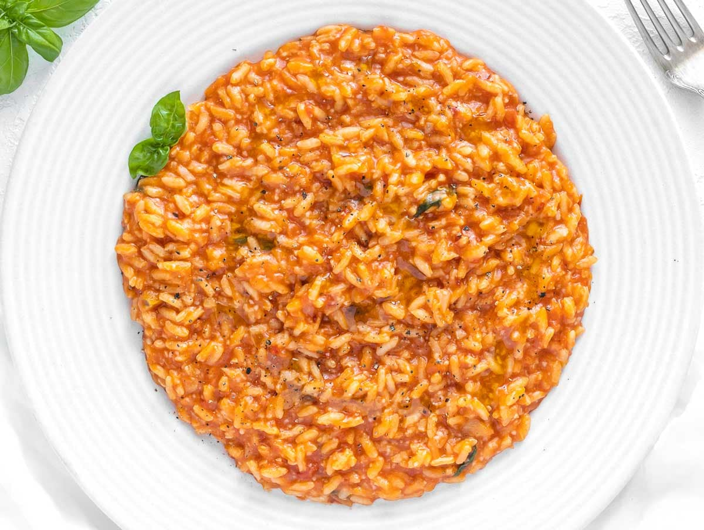

Risotto Recipe

Description
Risotto is one of my favorite recipes.
I make it at least once a week! It can seem like a difficult dish to master,
but once you master it you will look forward to making it.
Ingredients you will need:
- Arborio Rice
- White Wine
- Tomatos
- Tomato Paste (optional)
- Italian Seasonings
- Onion
- Garlic
Step-By-Step
- Dice your Onion
- Mince Garlic
- Once your pan is hot, add your Onion & Garlic. Cook until soft.
- After the Onion & Garlic is soft, add your rice. Cook until brown or a nutty smell starts to emit from the pan.
- After your rice is browned, add your white wine and stir regularly until it has been absorbed by the rice.
- Once the wine has been absorbed, add your tomatos and chicken stock.
- continue to add chicken stock one cup at a time until the rice is fully cooked.
- Once the rice is fully cooked, season to taste and add parmesan cheese.
And just like that, your Risotto is complete! Great job!